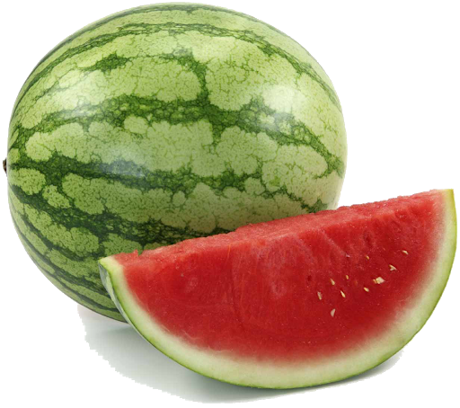
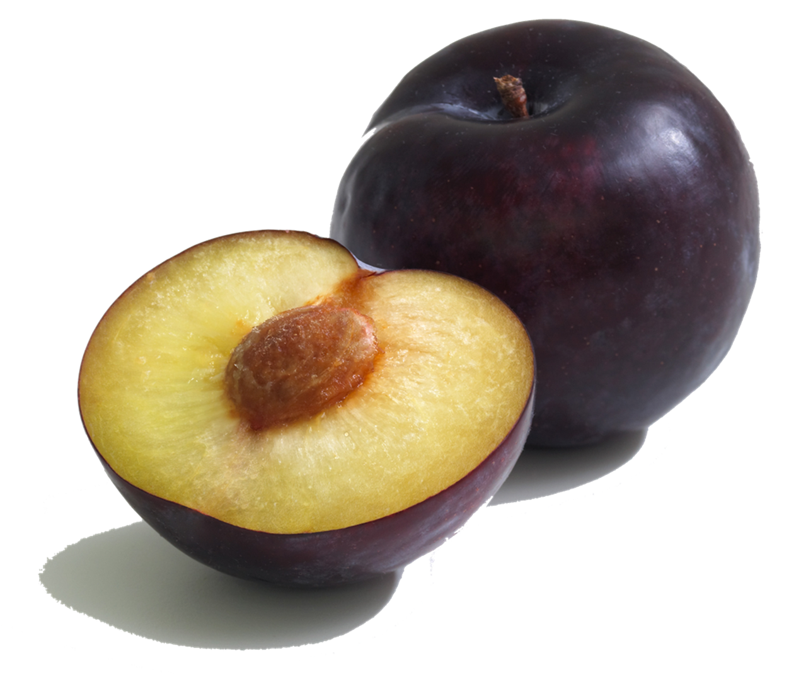
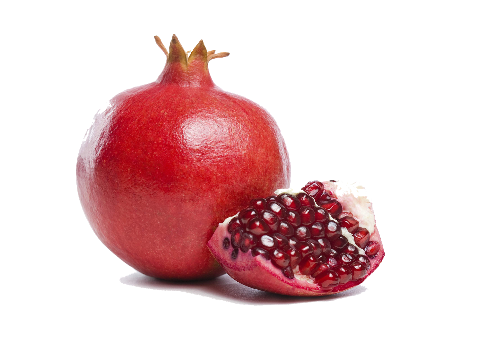

| Name
| Where are they from (around the world)
| Appearance
| Website
| Images
|
| Mangoes
| Originally from India but they spread accross Asia over time
| The appearance Varies from greenish red to a yellowish orange
| Hoity-Toity Mangoes
| 
|
| Watermelon
| This fruit is naitive to Africa
| Has two green shades that pattern on the outside. It's red in the inside of the fruit
| Wonderful Watermelon
| 
|
| Plums
| Originated from China but was later found in European countries
| Can have black, purple, red or yellow skin
| More on Plums
| 
|
| Pomegranate
| This fruit was naitive to Persia
| Can have a yellowish orange or reddish purple skin
| Pomegranates
| 
|